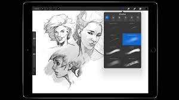

The iPAD is almost like a laptop, but it is touch screen and behaves similarly to a phone.
The first iPad was announced in 2010, and began to sell out faster than Macs. In the frist year alone, more than a million had been sold.
Since then, the displays have gotten larger and the accessibility has gotten better.
iPads provide perfect canvases. Apps such aas procreate make it so easy to do digital art, especially if you have the apple pencil. Digital art is such a relaxing hobby and can even turn into a career, and an iPad is the perfect gadget for the job.
